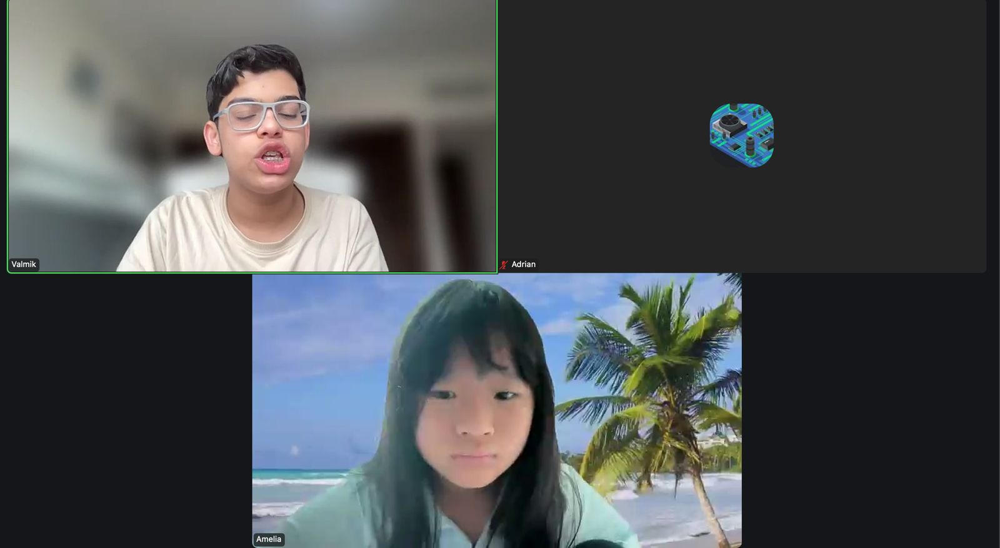
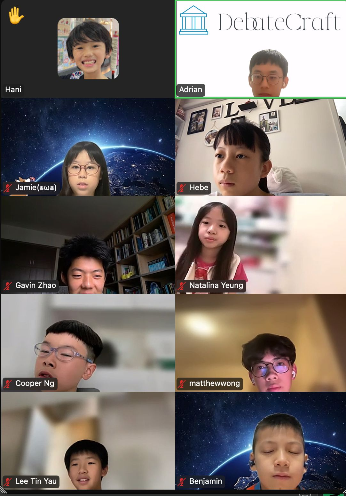
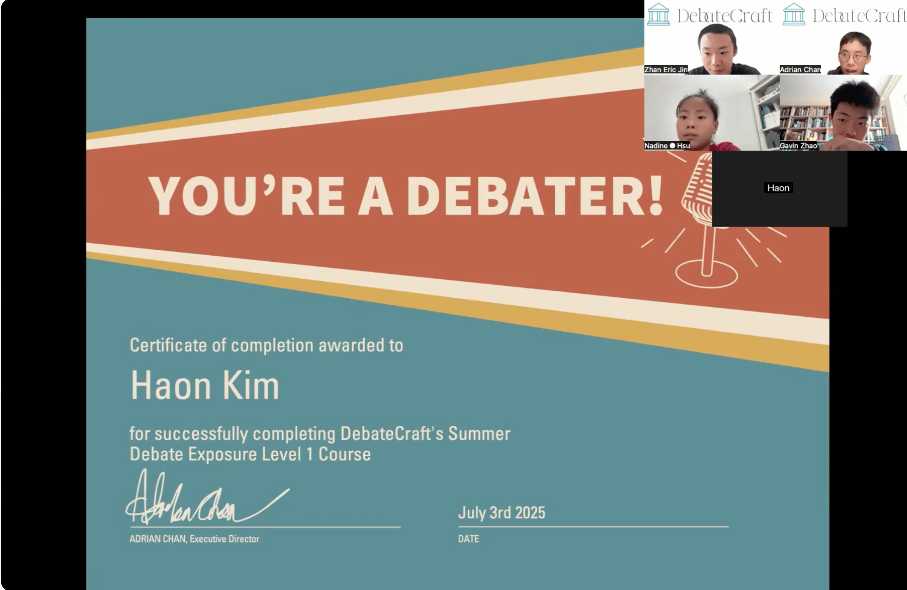

40th Stanford Invitational, 2026
A clear route from school debate to competition.
DebateCraft provides online coaching for schools that want a structured junior pathway, consistent feedback, and a programme that can continue across academic years.
Competitive record
Recent competitive record.
Our coaches and team members bring results from Hong Kong, Asia, and global circuits.
Asia WSDC, 2026
CISWSDC
Harvard International Open Division, 2023
Member affiliations include Hong Kong International School · German Swiss International School · Phillips Exeter Academy · Winchester College · Columbia University
Mr. Sandeep Chulani
Hong Kong Debate Team coach and selector; former chair of Hong Kong Schools Debating and Public Speaking Community; HKBPDC co-founder.
Adrian C
Judge at IIUM IDC 2026 and HKEDO, adding current adjudication standards to drills and round review.
Theodore W
Trainer at Chongqing WSDC Workshop 2024 and judge at Nanjing WSDC 2025.
Matthew W
Led Winchester College's Debate Society; coaches BP and international-relations motions.
Rachel R
Leads the German Swiss International School Debate Team; 2026 Hong Kong Junior Schools semifinalist and 7th best speaker.
Valmik D
Team Hong Kong Development Squad; 2nd open speaker at US Nationals 2026, Oxford WSDC U17 winner, and 50+ DebateCraft teaching hours.
For schools considering a programme
Two practical starting points.
Schools can begin with an existing junior team or develop a new programme. In both cases, coaching follows the academic calendar and leaves a clear record for staff and future cohorts.
Mandate A
Train the junior team
Build confident first- and second-year debaters before poor habits harden.
- Weekly squad training
- Motion preparation and speaking roles
- Feedback after every practice round
- Competition-specific intensives
Mandate B
Open a debate programme
Launch a school club with curriculum, coach support, and a path into competition.
- Programme and term design
- Beginner-to-competitive curriculum
- Teacher and student-leader handover
- Optional public-speaking and bioethics tracks
Training architecture
A syllabus schools can inspect.
Each level has a job. Progress depends on demonstrated habits, not time served.
StageTraining focusSchool outcomeFormat
FoundationClaim, reason, evidence, impact; speech confidenceStudents can build and deliver a complete case8–12 weeks
Junior squadRebuttal, weighing, team roles, limited preparationCompetition-ready novice teamTerm programme
CompetitiveWSDC or BP strategy; drills and round reviewDeeper bench and stronger tournament decisionsWeekly / intensive
InterdisciplinaryBioethics, policy, research and Harkness discussionDebate skills applied beyond tournamentsElective track
Teaching evidence
Work shown clearly.
Online sessions, practice rounds, and student learning records from DebateCraft.



For principals · activities directors · debate teachers